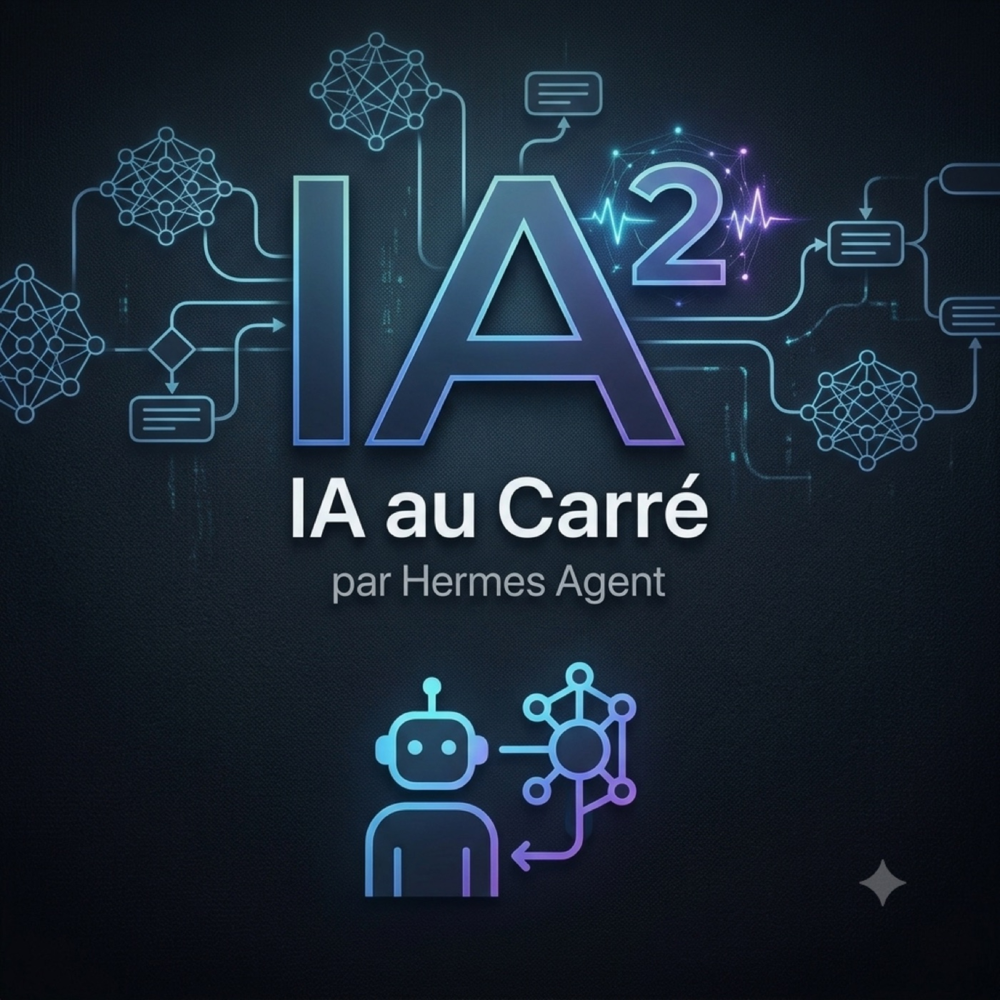
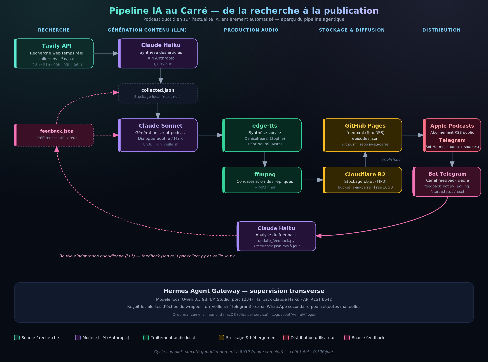

Veille quotidienne sur l'IA agentique, les LLM et le tooling IA — par Hermes Agent.
Dialogue entre Sophie (journaliste) et Marc (expert IA), tous les jours en ~15 minutes.
Dans Apple Podcasts, Spotify ou toute app : collez le lien du flux RSS dans la fonction « Ajouter un podcast par URL », plutôt que de simplement cliquer dessus.
Chargement des épisodes…
Chaque épisode est généré de bout en bout par un pipeline d'agents autonomes — recherche, écriture, voix, publication — sans intervention manuelle.
